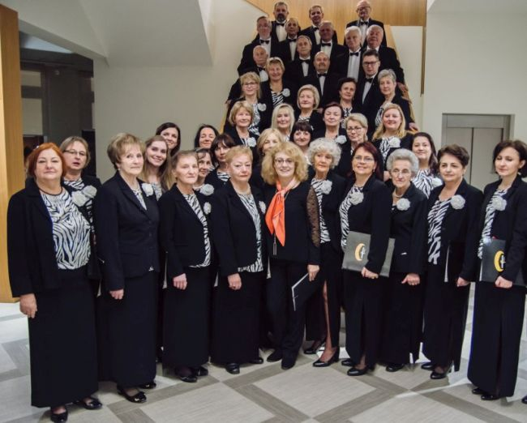
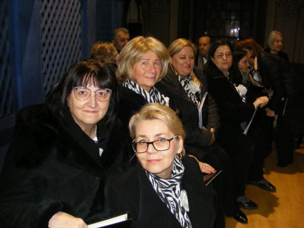
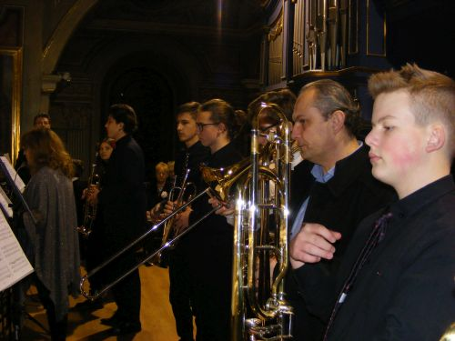
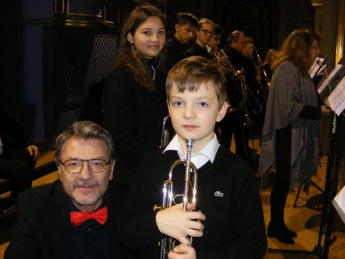
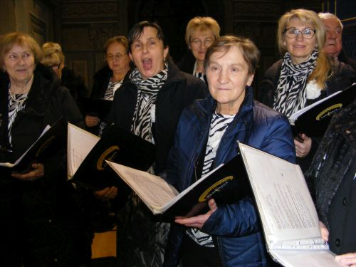

A tymczasem w Cameracie...
.
2022-01-08
XV Wielicki Wieczór KolędPomysłodawcą i realizatorem Wielickich Wieczorów Kolęd jest
Stowarzyszenie Muzyczne – Chór Camerata, które działa pod patronatem Wielickiego Centrum Kultury.

Wielicki Wieczór Kolęd, który miał miejsce w pięknym wnętrzu Kościoła Św. Klemensa, połączył inne ważne dla Wieliczki Jubileusze: 25-lecie działalności wielickiego chóru Camerata i 15-lecie istnienia wielickiej Szkoły Muzycznej.I to właśnie Jubilaci zaprezentowali najpiękniejsze kolędy i pastorałki oraz utwory doskonale wpisujące się w radosną atmosferę Świąt Bożego Narodzenia, jak The Earl of Oxford’s Marche W. Byrda, Grand Chorus Dialogue E. Gigout, czy Carol of Bells M. Leontovicha.

Jak powiedział nasz Wielki Rodak Św. Jan Paweł II „Muzyka ma ogromne zdolności wyrażania piękna każdej kultury. Ze swej natury może sprawić, że zabrzmią wewnętrzne harmonie. Podnosi intensywne i głębokie emocje, a swoim czasem wywiera ogromny wpływ”.
Tego właśnie mogli doświadczyć słuchacze XV Wielickiego Wieczoru Kolęd wsłuchując się w znakomite interpretacje chóru Camerata pod dyr. Izabeli Szoty oraz uczniów i nauczycieli Zespołu Szkół Muzycznych w Wieliczce –
Zuzanny Rokity, Karola Dyjaka, Jan Gałońskiego, Leona Gawlika, Krzysztof Sargi z klasy trąbki Pawła Gajewskiego, Gabrieli Kwiecińskiej, Igora Piątka, Mateusz Uzara z klasy puzonu Arkadiusza Bały, Arkadiusza Bały – puzon, Pawła Gajewskiego – trąbka, dzwonki, floor tom, prowadzenie zespołu instrumentów dętych, Aliny Mielnik – organy.

Podniosłości koncertowi dodało wspólne wykonanie średniowiecznego hymnu katolickiego na okres Bożego Narodzenia, Adeste fideles, po którym cytując Cypriana Kamila Norwida wykonawcy przekazali życzenia pełnego radości, pokoju i zdrowia Nowego 2022 Roku:
„Jest w moim Kraju zwyczaj, że w dzień wigilijny,
Przy wzejściu pierwszej gwiazdy wieczornej na niebie,
Ludzie gniazda wspólnego łamią chleb biblijny,
Najtkliwsze przekazując uczucia w tym chlebie”.
 
A na koniec wielicką świątynię wypełniła kolęda „Ponieś rękę Boże Dziecię, błogosław Ojczyznę miłą … dom nasz i majętność całą i wszystkie wioski z miastami, a Słowo Ciałem się stało i mieszkało między nami.”Tekst napisała dyr. Izabela Szota

© Stowarzyszenie Muzyczne Chór Camerata Wieliczka
Prowadzenie strony oraz zdjęcia: Małgorzata Wysocka-Cebula